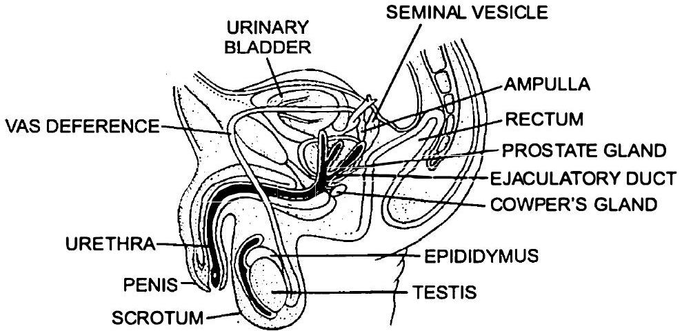
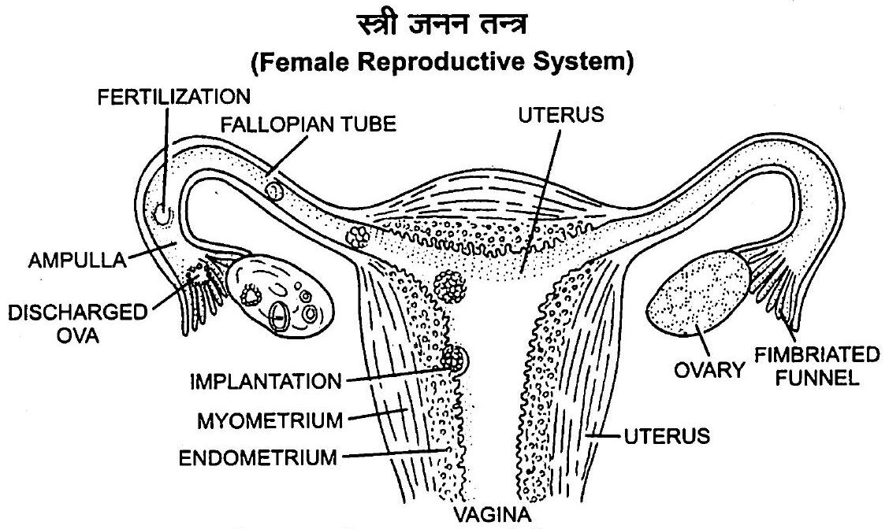
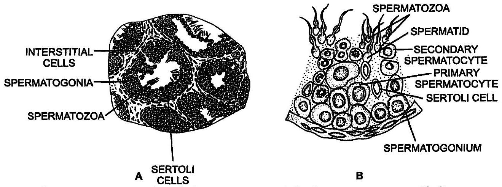
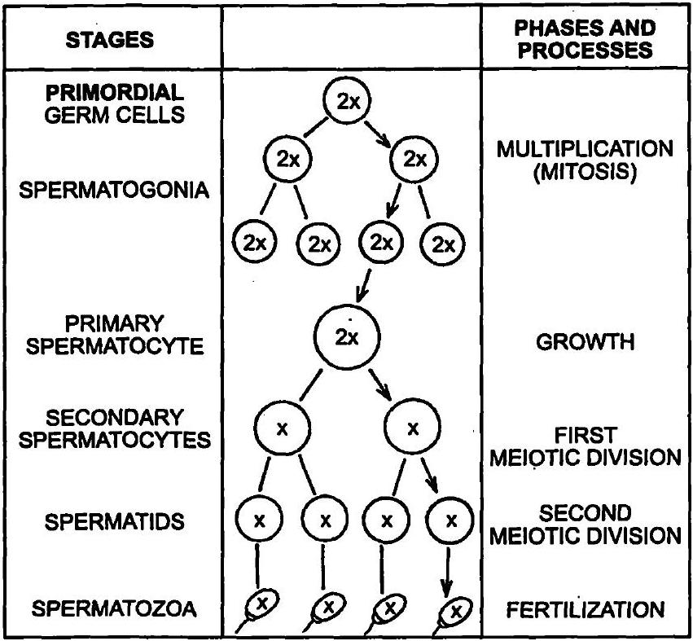
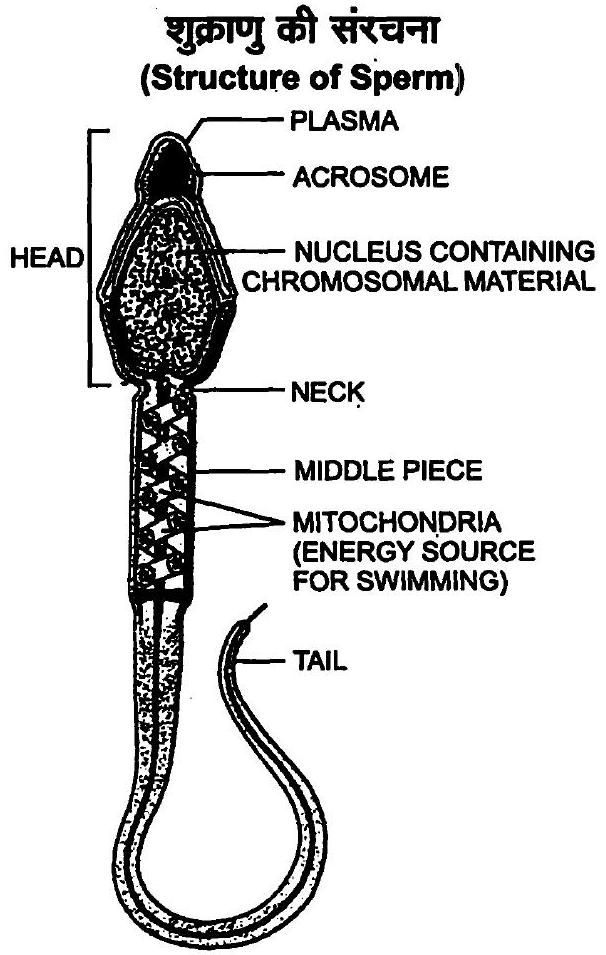
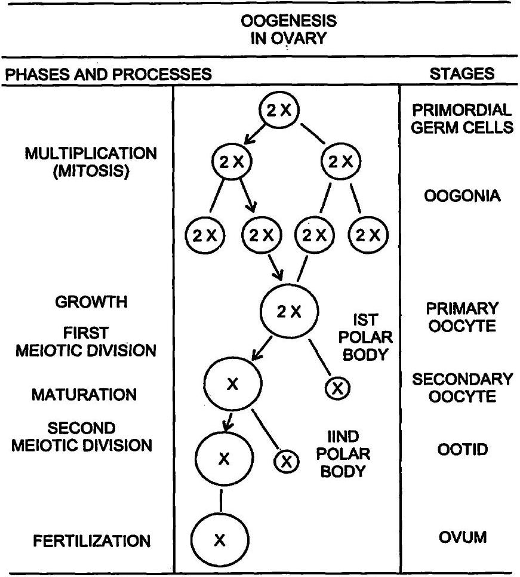
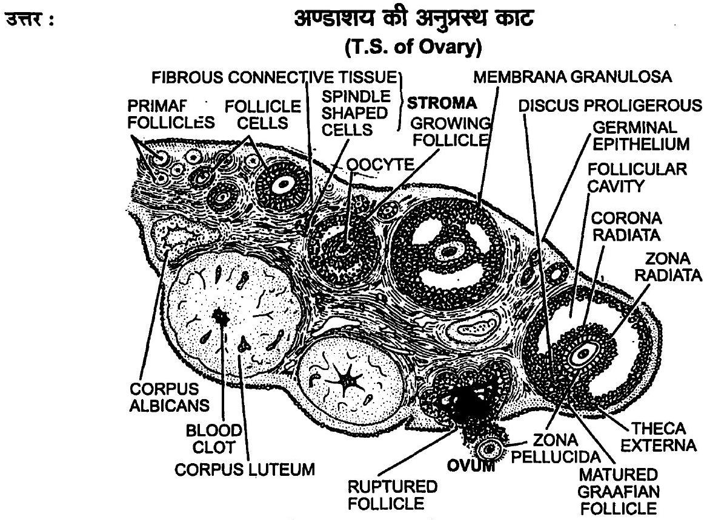
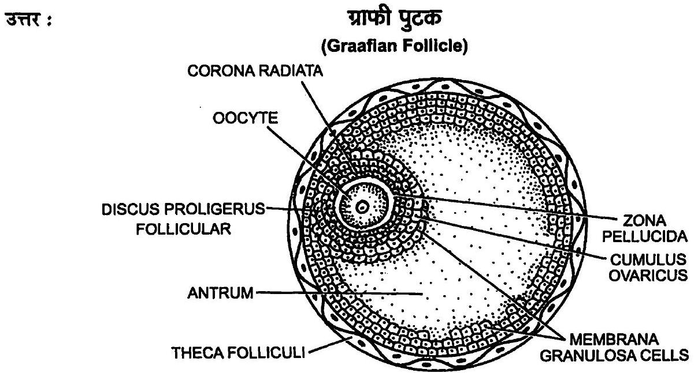
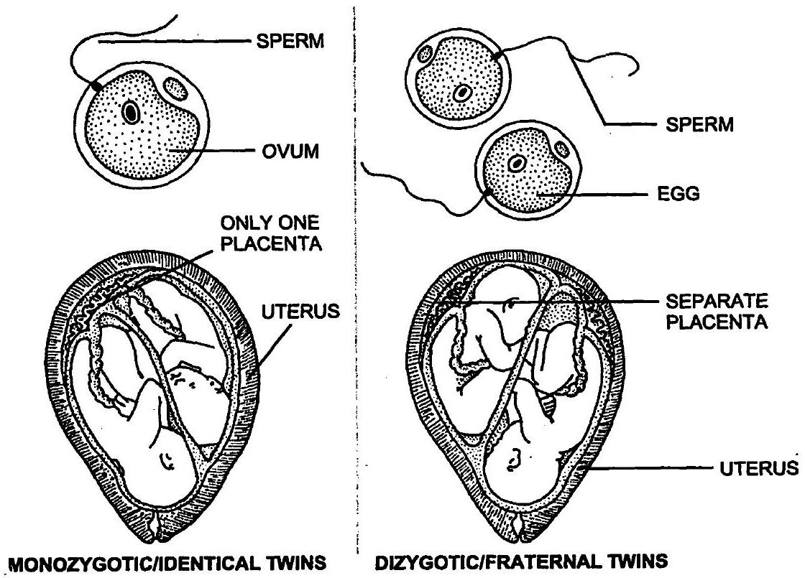

रिक्त स्थानों की पूर्ति करें:
मानव ____ उत्पत्ति वाला है।
(अलैंगिक/लैंगिक)
मानव ____ हैं।
( अंडप्रजक, सजीवप्रजक, अंडजरायुज)
मानव में ____ निषेचन होता है।
(बाह्य / आंतरिक)
नर एवं मादा युग्मक ____ होते हैं।
(अगुणित / द्विगुणित)
युग्मनज ____ होता है।
(अगुणित / द्विगुणित)
एक परिपक्व पुटक से अंडाणु (ओवम) के मोचित होने की प्रक्रिया को ____ कहते हैं।
अंडोत्सर्ग (ओव्यूलेशन) ____ नामक हॉर्मोन द्वारा प्रेरित (इनड्यूस्ड) होता है।
नर एवं स्त्री के युग्मक के संलयन (फ्युजन) को ____ कहते हैं।
निषेचन ____ में संपन्न होता है।
युग्मनज विभक्त होकर ____ की रचना करता है जो गर्भाशय में अंतर्रोपित (इंप्लांटेड) होता है।
भ्रूण और गर्भाशय के बीच संवहनी संपर्क बनाने वाली संरचना को ____ कहते हैं।
पुरुष जनन-तंत्र का एक नामांकित आरेख बनाएँ।
(Male Reproductive System)

स्त्री जनन-तंत्र का एक नामांकित आरेख बनाएँ।
(Female Reproductive System)

वृषण तथा अंडाशय के बारे में प्रत्येक के दो-दो प्रमुख कार्यों का वर्णन करें।
(1) वृषण में जनन कोशिकाओं से शुक्रजनन (spermatogenesis) द्वारा शुक्राणुओं (sperms) का निर्माण होता है।
(2) वृषण की सर्टोली कोशिकाएँ (Sertoli cells) शुक्रजन कोशिकाओं तथा शुक्राणुओं का पोषण करती हैं।
(3) वृषण की अन्तराली कोशिकाओं से एन्ड्रोजन (androgens) (टेस्टोस्टेरॉन) हॉर्मोन्स स्रावित होते हैं।
ये हॉर्मोन्स द्वितीयक लैंगिक लक्षणों (secondary sexual characters) के विकास को प्रेरित करते हैं।
(1) अण्डाशय की जनन कोशिकाओं से अण्डजनन द्वारा अण्डाणुओं (ova) का निर्माण होता है।
(2) अण्डाशय की ग्राफियन पुटिका (Graafian follicle) से एस्ट्रोजन हॉर्मोन (estrogen hormone) स्रावित होता है।
यह हॉर्मोन स्त्रियों के द्वितीयक लैंगिक लक्षणों को प्रेरित करता है।
(3) अण्डाशय में बनी संरचना कॉर्पस ल्यूटियम (corpus luteum) से स्रावित प्रोजेस्टेरॉन (progesterone) हॉर्मोन गर्भाशय में निषेचित अण्डाणु को स्थापित करने में सहायक होता है।
शुक्रजनक नलिका की संरचना का वर्णन करें।

प्रत्येक पालि में एक से तीन शुक्रजनक नलिकाएँ (seminiferous tubules) पायी जाती हैं।
शुक्रजनक नलिकाओं के बाहर संयोजी ऊतक में स्थान-स्थान पर अन्तराली कोशिकाओं (interstitial cells) के समूह स्थित होते हैं।
इन्हें लेडिग कोशिकाएँ (Leydig's cells) भी कहते हैं।
इनसे स्रावित नर हॉर्मोन्स (testosterone) के कारण द्वितीयक लैंगिक लक्षण विकसित होते हैं।
प्रत्येक शुक्रजनक नलिका पतली एवं कुण्डलित होती है।
इसकी भीतरी पर्त को जनन एपिथीलियम (germinal epithelium) कहते हैं।
जनन एपिथीलियम का निर्माण मुख्य रूप से जनन कोशिकाओं (germ cells) से होता है।
इनके मध्य स्थान-स्थान पर सर्टोली कोशिकाएँ (Sertoli cells or nurse cells) पायी जाती हैं।
जनन कोशिकाओं से शुक्रजनन द्वारा शुक्राणुओं का निर्माण होता है।
शुक्राणु सर्टोली कोशिकाओं से पोषक पदार्थ एवं ऑक्सीजन प्राप्त करते हैं।
शुक्राणुजनन क्या है? संक्षेप में शुक्राणुजनन की प्रक्रिया का वर्णन करें।

शुक्राणुओं का निर्माण किशोरावस्था के समय प्रारम्भ हो जाता है।
यह प्रक्रिया लैंगिक हॉर्मोन्स (GnRH, LH, FSH तथा एन्ड्रोजन्स) द्वारा प्रभावित होती है।
शुक्रजनन प्रक्रिया को निम्नलिखित तीन चरणों में बाँटा जा सकता है-
ये कोशिकाएँ द्विगुणित होती हैं।
इन कोशिकाओं को प्राथमिक स्पर्मेटोसाइट्स (primary spermatocytes) कहते हैं।
अर्द्धसूत्री प्रथम विभाजन के फलस्वरूप द्वितीयक स्पर्मेटोसाइट्स (secondary spermatocytes) या द्वितीयक शुक्राणु कोशिकाएँ बनती हैं।
ये अगुणित होती हैं।
द्वितीयक स्पर्मेटोसाइट्स द्वितीय अर्द्धसूत्री विभाजन के फलस्वरूप अगुणित शुक्राणु पूर्व कोशिका या स्पर्मेटिड्स (spermatids) बनाती हैं।
इस प्रकार एक प्राथमिक स्पर्मेटोसाइट से चार स्पर्मेटिड्स बनते हैं।
चल शुक्राणु सर्टोली कोशिकाओं में अन्त:स्थापित हो जाते हैं।
समय-समय पर शुक्राणु मुक्त होकर शुक्रवाहिनी में पहुँचते रहते हैं।
शुक्राणुओं का सर्टोली कोशिकाओं से शुक्रजनन नलिका की गुहा में मुक्त होना स्पर्मिएशन (spermiation) कहलाता है।
शुक्राणुजनन की प्रक्रिया के नियमन में शामिल हॉर्मोनों के नाम बताएँ?
(i) गोनैडोट्रॉपिन रिलीजिंग हॉर्मोन (Gonadotropin releasing hormone),
(ii) पीत पिण्डकर हॉर्मोन (Luteinizing hormone),
(iii) पुटकोद्दीपक हॉर्मोंन (Follicle stimulating hormone),
(iv) एण्ड्रोजन्स (Androgens)।
शुक्राणुजनन एवं वीर्यसेचन (स्परमियेशन) की परिभाषा लिखें।
इस प्रक्रिया को शुक्राणुजनन या शुक्राणु कायान्तरण (spermiogenesis) कहते हैं।
इसके बाद शुक्राणु शुक्रजनक नलिकाओं की गुहा (lumen) में मुक्त (released) हो जाते हैं।
इस प्रक्रिया को वीर्यसेचन (spermiation) कहते हैं।
शुक्राणु का एक नामांकित आरेख बनाएँ।

शुक्रीय प्रद्रव्य (सेमिनल प्लाज्मा) के प्रमुख संघटक क्या हैं?
पुरुष की सहायक नलिकाओं एवं ग्रंथियों के प्रमुख कार्य क्या हैं?
वृषण से बाहर तक इनका पथ इस प्रकार है-
वासा इफरेन्शिया → एपीडिडिमिस → वासा डिफरेन्शिया → यूरेथ्रा ← स्खलन नलिका
(i) शुक्राशय (seminal vesicle) से एक चिपचिपा तरल स्रावित होता है।
यह तरल शुक्रीय प्रद्रव्य (seminal plasma) का मुख्य भाग बनाता है।
शुक्रीय प्रद्रव्य और शुक्राणु मिलकर वीर्य बनाते हैं।
(ii) पुर:स्थ ग्रन्थि (Prostate gland)-यह ग्रन्थि मूत्रमार्ग के अधर भाग के चारों ओर स्थित होती है।
इससे स्रावित तरल शुक्राणुओं को सक्रिय बनाए रखता है और मूत्रमार्ग की अम्लीयता को समाप्त करता है।
(iii) बल्बोयूरेश्रल या काउपर्स ग्रन्थि (Bulbourethral or Cowper's gland)-यह एक जोड़ी ग्रन्थि होती है।
ये मूत्रमार्ग के पार्श्वों में स्थित होती हैं।
मैथुन से पहले इन ग्रन्थियों से एक क्षारीय और चिकना द्रव स्रावित होता है।
यह द्रव मूत्रमार्ग की अम्लीयता को समाप्त करता है और उसे चिकना बनाकर मैथुन में मदद करता है।
अंडजनन क्या है? अंडजनन की संक्षिप्त व्याख्या करें।

स्त्री जब अपनी माँ के गर्भ में होती है, तभी अण्डजनन शुरू हो जाता है, लेकिन यह प्रक्रिया किशोरावस्था तक रुकी रहती है।
यह अण्डाशय की ग्राफियन पुटिका (Graafian follicle) में होने वाली प्रक्रिया है।
इसके द्वारा अण्डाणु (ovum) का निर्माण होता है।
अण्डजनन पीयूष ग्रन्थि से स्रावित पुटिका प्रेरक हॉर्मोन (FSH) तथा LH के नियन्त्रण में होता है।
स्त्री में हॉर्मोन के प्रभाव से प्रतिमाह एक ग्राफियन पुटिका परिपक्व होती है।
अण्डाशय के निर्माण के समय ही प्राथमिक जनन कोशिकाएँ अण्डाशयी पुटिकाओं (ovarian follicles) के रूप में एकत्र हो जाती हैं।
इनमें से एक कोशिका अण्डाणु मातृ कोशिका (egg mother cell) के रूप में विभेदित हो जाती है।
शिशु जन्म के समय ही सारी अण्डाशयी पुटिकाएँ उपस्थित होती हैं।
यह भ्रूण अवस्था में ही शुरू हो जाती है।
लैंगिक परिपक्वन के बाद भी, जब तक कोई पुटिका विशेष रूप से परिपक्व नहीं होती, तब तक वह वृद्धि प्रावस्था में ही बनी रहती है।
अण्डाणु मातृ कोशिका अण्डाणुजन कोशिका या ऊगोनियम (oogonium) में बदल जाती है और वृद्धि प्रावस्था में प्रवेश करती है।
यह काफी मात्रा में पोषक पदार्थ जमा करती है और सामान्य कोशिका से आकार में कई सौ गुना बड़ी हो जाती है।
यह ग्राफियन पुटिका के परिपक्व होने तक इसी अवस्था में रहती है।
अब इसे पूर्व अण्डाणु कोशिका या प्राथमिक ऊसाइट (primary oocyte) कहते हैं।
यह विभाजन असमान होता है, और इसका उद्देश्य केवल गुणसूत्रों की संख्या आधी करना है।
इस विभाजन के बाद एक अगुणित द्वितीयक ऊसाइट या द्वितीयक अण्डाणु कोशिका (secondary oocyte) तथा एक अगुणित लोपिका या ध्रुवीय पिण्ड (polar body) बनते हैं।
इसी अवस्था में ग्राफियन पुटिका फटती है और अण्डाशय से द्वितीयक अण्डाणु कोशिका को मुक्त करती है।
द्वितीय अर्द्धसूत्री विभाजन तब होता है जब शुक्राणु अण्डाणु में प्रवेश करता है।
इसके फलस्वरूप अण्डाणु (ovum) तथा एक द्वितीय अगुणित लोपिका या ध्रुवीय पिण्ड (polar body) का निर्माण होता है।
अण्डजनन एक लम्बी और जटिल प्रक्रिया है, जो निरन्तर अन्तराल पर होती रहती है।
अंडाशय के अनुप्रस्थ काट (ट्रांसवर्स सेक्शन) का एक नामांकित आरेख बनाएँ।

ग्राफी पुटक (ग्राफिएन फॉलिकिल) का एक नामांकित आरेख बनाएँ।

निम्नलिखित के कार्य बताएँ-
पीत पिंड (कॉर्पस ल्युटियम)
यह फॉलिकुलर कोशिकाओं और रक्त थक्के से बनती है।
इससे प्रोजेस्टेरॉन, एस्ट्रोजन्स, रिलैक्सिन आदि हॉर्मोन्स स्रावित होते हैं।
प्रोजेस्टेरॉन हॉर्मोन भ्रूण के आरोपण, सगर्भता (pregnancy) तथा अपरा (placenta) के निर्माण में सहायता करता है।
गर्भाशय अंतःस्तर (इंडोमेट्रियम)
अग्रपिंडक (एक्रोसोम)
इससे मुक्त होने वाले स्पर्म लासिन्स जैसे हाइल्यूरोनिडेज (hyaluronidase) एन्जाइम अण्डाणु के रक्षात्मक आवरण का अपघटन (lysis) कर देते हैं।
इसके फलस्वरूप शुक्राणु अण्डाणु में प्रवेश कर जाता है।
शुक्राणु पुच्छ (स्पर्म टेल)
झालर (फिम्ब्री)
इसे मुखिका (ostium) कहते हैं।
यह झालरदार तथा रोमाभि (fimbriated and ciliated) होता है।
इसकी अंगुली सदृश रचनाओं को फिम्ब्री कहते हैं।
ये अण्डाणुओं को ग्रहण करने में सहायक होती हैं।
सही या गलत कथनों को पहचानें -
पुंजनों (एंड्रोजेन्स) का उत्पादन सर्टोली कोशिकाओं द्वारा होता है।
(सही/गलत)
शुक्राणु को सर्ट्रोली कोशिकाओं से पोषण प्राप्त होता है।
(सही/गलत)
लीडिग कोशिकाएँ अंडाशय में पाई जाती हैं।
(सही/गलत)
लीडिग कोशिकाएँ पुंजनों (एंड्रोजेन्स) को संश्लेषित करती हैं।
(सही/गलत)
अंडजनन पीत पिंड (कॉपर्स ल्युटियम) में संपन्न होता है।
(सही/गलत)
सगर्भता (प्रेगनेंसी) के दौरान आर्तव चक्र (मेन्सटुअल साइकिल) बंद होता है।
(सही/गलत)
योनिच्छद (हाइमेन) की उपस्थिति अथवा अनुपस्थिति कौमार्य (वर्जिनिटी) या यौन अनुभव का विश्वसनीय संकेत नहीं हैं।
(सही/गलत)
आर्तव चक्र क्या हैं? आर्तव चक्र (मेन्सटुअल साइकिल) का कौन से हॉर्मोन नियमन करते हैं?
स्त्रियों में ये परिवर्तन माह में एक बार दोहराए जाते हैं।
अत: इसे माहवारी चक्र या आर्तव चक्र कहते हैं।
प्रथम ऋतुस्राव/रजोधर्म (मेन्सटुएशन) का प्रारम्भ यौवनारम्भ से होता है।
इसे रजोदर्शन (मेनार्के-menarche) कहते हैं।
स्त्रियों में यह आर्तव चक्र प्राय: 26-28 दिन की अवधि के पश्चात् दोहराया जाता है।
ऋतुस्राव में अनिषेचित अण्डाणु कुछ रक्त व गर्भाशयी अन्त:स्तर की खण्डित कोशिकाओं के साथ योनि मार्ग से बाहर आता है।
इस चक्र में ऋतुस्राव (menstruation) की अवस्था के बाद पुटिकीय या फॉलिकुलर अवस्था आती है।
इसमें गर्भाशय के अन्त:स्तर की टूट-फूट की मरम्मत व नयी वृद्धि होती है तथा पुटिकीय विकास होता है।
अगली अवस्था 14 वें दिन अण्डोत्सर्ग की होती है।
इसके बाद पीत अवस्था (luleal phase) या स्रावी अवस्था आती है।
इसमें प्रोजेस्टेरॉन के प्रभाव से गर्भाशयी भित्ति का विकास होता है तथा यह अपेक्षित गर्भधारण हेतु तैयार होती है।
अण्डोत्सर्ग के बाद पुटिका कॉर्पेस ल्यूटियम बना देती है।
निषेचन के अभाव में पुन: ऋतुस्राव अवस्था दोहराई जाती है।
एल०एच० तथा एफ०एस०एच० (Luteinizing Hormone & Follicle Stimulating Hormone) ग्राफियन पुटिकाओं की वृद्धि, अण्डजनन तथा एस्ट्रोजन्स (estrogens) के स्रावण को प्रेरित करते हैं।
एल०एच० का स्रावण आर्तव चक्र के मध्य (लगभग 14 वें दिन) अपने उच्चतम स्तर पर होता है।
इसे एल०एच० सर्ज (L.
H.
Surge) कहते हैं।
यह ग्राफियन पुटिका के फटने को प्रेरित करता है, यानि अण्डोत्सर्ग हो जाता है।
अण्डोत्सर्ग के पश्चात् अण्डाणु फैलोपियन नलिका में आता है।
यहीं पर इसका निषेचन होता है।
निषेचन के बाद सगर्भता प्रारम्भ होती है।
अगर अण्डाणु का निषेचन नहीं हो पाता तो कॉर्पस ल्यूटियम विलुप्त होने लगता है।
प्रोजेस्टेरॉन व एस्ट्रोजन की कमी से गर्भाशय की भित्ति का खण्डन प्रारम्भ हो जाता है और रक्तस्राव शुरू हो जाता है।
रक्तस्राव के साथ अनिषेचित अण्डाणु भी बाहर आ जाता है।
इसी को ऋतुस्राव कहते हैं।
4-5 दिन तक रक्तस्राव होता रहता है।
इसके पश्चात् लगभग 9 दिन में गर्भाशय की भित्ति की मरम्मत हो जाती है।
प्रसव (पारट्युरिशन) क्या हैं? प्रसव को प्रेरित करने में कौन से हार्मोन शामिल होते हैं?
इनके कारण नवजात शिशु (foetus) गर्भाशय से बाहर आ जाता है।
इसे प्रसव (parturition) या शिशु जन्म कहते हैं।
प्रसव के संकेत पूर्ण विकसित भ्रूण (foetus) तथा अपरा (placenta) से उत्पन्न होते हैं।
ये संकेत पीयूष ग्रन्थि से ऑक्सीटोसिन (oxytocin) हॉर्मोन के स्रावण को तीव्र करते हैं।
ऑक्सीटोसिन या पिटोसिन (pitocin) प्रसव पीड़ा उत्पन्न करके प्रसव सम्पन्न कराता है।
अण्डाशय द्वारा स्रावित रिलेक्सिन (relaxin) हॉर्मोन प्यूबिक सिम्फाइसिस को ढीला कर देता है।
इससे श्रोणि क्षेत्र चौड़ा हो जाता है और प्रसव आसान हो जाता है।
हमारे समाज में लड़कियाँ जन्म देने का दोष महिलाओं को दिया जाता है।
बताएँ कि यह क्यों सही नहीं है?
इनमें से 22 जोड़ी गुणसूत्र समजात होते हैं।
23 वाँ जोड़ी गुणसूत्र स्त्रियों में XX तथा पुरुष में XY होता है।
युग्मकजनन द्वारा स्त्रियों के अण्डाशय में उत्पादित सभी अण्डाणु 22+X गुणसूत्र वाले होते हैं।
जबकि पुरुष के वृषण में उत्पादित 50 % शुक्राणु 22+X गुणसूत्र वाले तथा 50 % शुक्राणु 22+Y गुणसूत्र वाले होते हैं।
इस कारण स्त्रियों को समयुग्मकी तथा पुरुषों को विषमयुग्मकी कहा जाता है।
निषेचन के समय यदि 22+X शुक्राणु का समेकन अण्डाणु के साथ होता है, तब मादा सन्तान उत्पन्न होगी, क्योंकि इसकी जीन संरचना 44+XX होगी।
यदि अण्डाणु का समेकन 22+Y शुक्राणु के साथ होता है, तब नर सन्तान उत्पन्न होगी, क्योंकि इसकी जीन संरचना 44+XY होगी।
उपर्युक्त कथन से स्पष्ट है कि लिंग निर्धारण में स्त्रियों की कोई भूमिका नहीं होती।
ये समयुग्मकी होती हैं, क्योंकि अण्डाशय में केवल एक ही प्रकार के अण्ड उत्पादित होते हैं।
एक माह में मानव अंडाशय से कितने अंडे मोचित होते हैं? यदि माता ने समरूप जुड़वाँ बच्चों को जन्म दिया हो तो आप क्या सोचते हैं कि कितने अंडे मोचित हुए होंगे? क्या आपका उत्तर बदलेगा यदि जन्मे हुए जुड़वाँ बच्चे, द्विअंडज यमज थे?

प्रथम विभाजन के फलस्वरूप बनी कोरक खण्ड (ब्लास्टोमीयर्स-blastomeres) एक-दूसरे से पृथक् होकर समरूप जुड़वाँ का विकास करती है।
इनकी जीन संरचना भी भिन्न होती है।
इसका तात्पर्य है कि जितने द्विअण्डज यमज होते हैं, उतने ही अण्डाणुओं का निषेचन भिन्न-भिन्न शुक्राणुओं से होता है।
आप क्या सोचते हैं कि कुतिया, जिसने 6 बच्चों को जन्म दिया है, के अंडाशय से कितने अंडे मोचित हुए थे?
अनेक छोटे स्तनधारियों में एक बार में अनेक अण्डे मोचित होते हैं।
इनका निषेचन अलग-अलग शुक्राणुओं द्वारा होता है, जिससे अलग-अलग संतति बनती है।